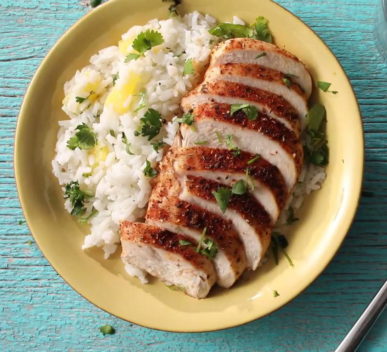

Caribbean Chicken with Pineapple-Cilantro Rice

Description
Caribbean inspired seasoned baked chicken breasts served with pineapple and cilantro rice
Ingredients
1 tablespoon light brown sugar
1 teaspoon ground black pepper
1 teaspoon dried thyme
1 teaspoon ground cumin
1 teaspoon garlic salt
1 teaspoon paprika
1/2 teaspoon chili powder
4 skinless, boneless chicken breast halves
1 cup uncooked white rice
1 can sliced pineapple in juice, drained-divided
2 tablespoons chopped fresh cilantro
1 teaspoon olive oil
1 pinch garlic salt
1 pinch ground black pepper
Steps
- Preheat over to 350 degrees F
- teaspoon of garlic salt, paprika, chili powder,
and nutmeg in a bowl until thoroughly combined.
Rub both sides of chicken breasts with the spice mixture,
and place into a 9x9-inch baking dish.
Sprinkle any remaining seasoning mix on top of chicken, if desired.
- Bake in the preheated oven until the chicken is lightly browned,
no longer pink inside, and the juices run clear, about 30 minutes.
An instant-read meat thermometer inserted into the thickest part of a chicken breast should read at least 160 degrees F (70 degrees C).
- Reduce heat to medium-low, cover, and simmer until the rice is tender, and the liquid has been absorbed, 20 to 25 minutes.
- Chop half the pineapple slices. Mix the chopped pineapple, cilantro, and olive oil into the cooked rice, and season to taste with a pinch or two of garlic salt and black pepper. Fluff the rice up with a fork, and transfer to a serving platter. Serve with the baked chicken, topped with remaining pineapple slices.